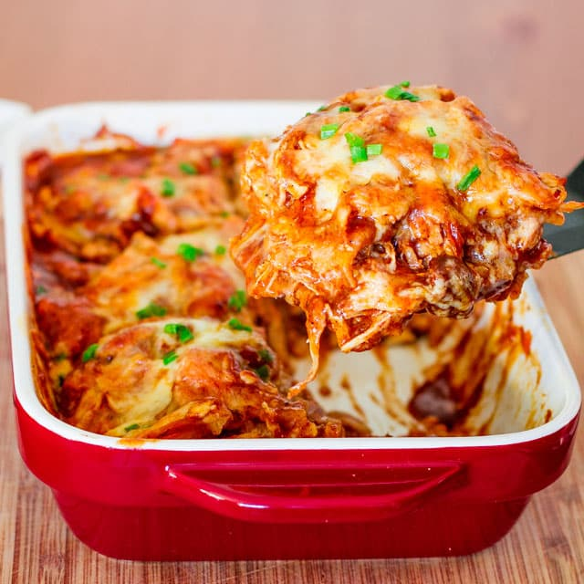

Quick and Easy Chicken Enchilada Casserole
This is a go to meal beloved by all members of my family. What is there not to love about cheesy creamy enchilada goodness?
We usually make refried beans and Spanish or Mexican rice as sides to create a full meal.
I actually got this recipe from my aunt. I owe my family and friends favorite recipe to her. It is fairly easy
to make and creates plenty of leftovers for another night's dinner or a few lunches.
Ingredients
- 3 large chicken breast, cooked and shredded
- Red enchilada sauce 28 oz+
- Shredded cheese 16 oz+ i.e. Mexican blend, cheddar, Colby, etc.
- 9 Burrito size tortillas
- Cream of chicken
- Cream cheese block
- Diced green chiles 5 oz
Steps
- Coat a casserole or disposable pan with a few table spoons of enchilada sauce
until the entire bottom of pan is covered.
- Mix cream cheese, drained green chiles, cream of chicken, and shreadded chicken.
- Place a whole tortilla in the middle of the coated pan. Then rip or cut 2 tortillas in half and place
those on side, top, and bottom edges to cover the entire bottom of the pan.
- Scoop half the chicken mixture into the pan and spread out.
- Cover the chicken mixture with 1/3 of the red sauce and 1/3 of the shredded cheese.
- Repeat steps 3-5 one more time for the 2nd layer.
- Cover the second layer by repeating step 3. Then use last of red sauce and cheese to top the casserole.